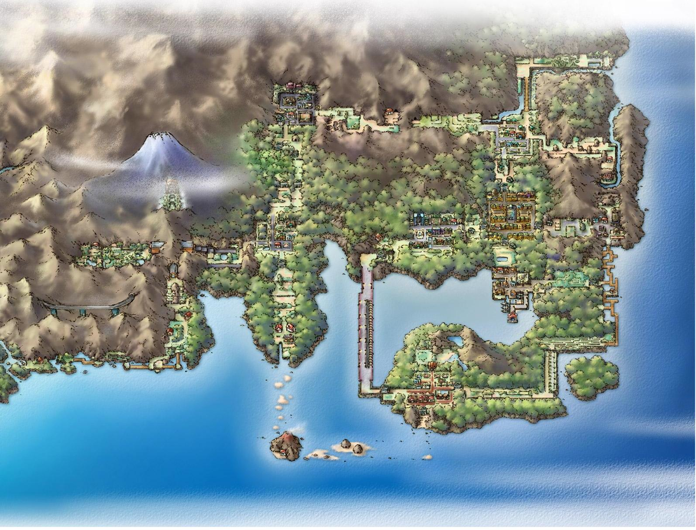

Your journey awaits!

The Kanto region is known for its diverse landscape, people, and Pokemon.
While spending your time here, you will have experiences that cannot be
found anywhere else. Every town has its very own unique charm to it. If
shopping is what you wish for, there is no better place then Celadon City's
Department Store. The store contains six stories, with each floor having its
own specialty items. If you are seeking entertainment, then Fuchsia City
awaits. There you will find the Safari Zone. The Safari Zone is a special
wildlife preserve where those who enter have the chance to capture rare wild
Pokemon. If it is adventure you seek, then there is no better place then Kanto!